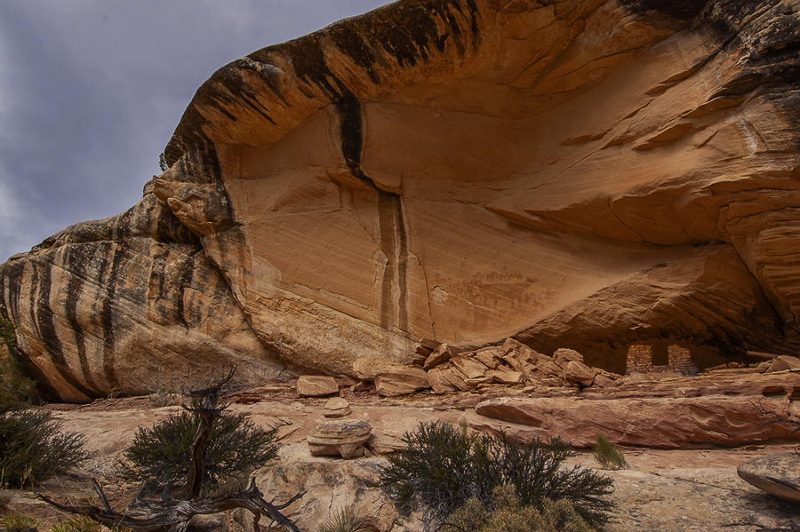

Ray Rasmussen
Edmonton, Alberta, Canada
Visit with a Long-Dead Rock-Artist

Utah. To-ko-chi Canyon. My tent pitched near an Ancient Puebloan ruin and rock art panel.
Photojournalism. Time Magazine’s “The Year’s Best.” I plan to capture images of the southwest: rural folks in small towns, hikers met on the trails, Hopi at their pueblos and remnants of their ancestors’ dwellings and art. The magazine’s images are for “how to do it” ideas.
Dusk, the day’s heat fleeing. Sipping tequila as I browse images. No one here to share drink, fire’s warmth, images and musings – unless I count the artist who a thousand years ago painted an image near the ruin.
Musings. Photojournalism. Image with caption. Like haiku and haibun prose, not overly didactic, more show than tell.
Time Magazine image-stories. Page by page, thumbing through. Most focus on the chaos in today’s world. One shows four soldiers rushing through a swirl of dust to carry a wounded comrade to a medevac helicopter. Another, a smiling man with an assault rifle standing outside a gun show in Tucson. And another, a group of neo-Nazis facing the camera with hands raised in Hitler salutes, a swastika banner waving in the background. Not the kind I want to make.
falling stars –
a white moth plunges
into the flames
Fireside. Night's silence. My headlamp spotlights a scene occurring in a place only a few hundred miles from where I’m sitting. 
Musings. Photojournalism: caption and image. Haiga: haiku and image. Unlikely that image plus caption or haiku can be completely neutral, no such thing as pure show. But consider a more didactic caption:
Mother and small children tear-gassed
in draconian border practices
Musings. Captions. The original allows viewers to respond more easily according to their own values. Some might feel that the practices are harsh, but necessary for various reasons. Others that it’s immoral not to accept people who are escaping difficult lives in their home country.
My counter example plants the flag of moralism deep in the soil, preaches rather than shows.
Whatever the reader's interpretation, there's the photojournalist’s sub-text message:
Look at this. Make what you wish of it, but don’t pretend it isn’t happening.
Tripod and camera set. Focus on the rock art panel. A large animal, perhaps a bear, surrounded by human and canine figures.
Musings. Long dead painter, your time’s photojournalist. I think you painted this in good times. But a thousand years ago, there was a 100-year drought, crops failed, animal populations declined, your children starving. The people vacated their homeplace, never to return.
bits of pottery and paint
all that remains
of generations
No one knows the meaning of your artwork. We few who visit your work know you went to great trouble to show your story in images, just as I'm showing my story about your story with images, prose and haiku, just as Basho, who may have lived when you did, showed his feelings about the demise of the Fujiwara clan while visiting the ruins at Hiraizumi.
Musings. Captions. Cousins of haiku. What words would fit my image, would mostly show without too much tell? Will this suffice? Does it leave room for readers to explore their own reactions and sensibilities?
Braves and dogs on a hunt
coals glowing red
the artist’s painting etched
in mind's eye
photojournalism exhibit
the photographers present,
yet not present
Notes:
The phrase "all that remains" and the haiku itself are modeled on Basho's "summer grasses / all that remains / of soldier's dreams," trans. L. Stryk. Basho included the haiku in his haibun "Hiraizumi" about his visit to the ruins of Hiraizumi and the demise of the Fujiwara clan. It's one chapter in his classic Narrow Road to the Deep North.
This haibun-haiga-esssay is an expanded version of a mimimalist haibun sans images and didactic commentary that originally appeared in bottle rockets. If you would like to see the original, click here -> original
Rock Art is the name given to the work of ancient peoples who painted (pictograph) and chipped (petroglyph) images on or into stone. The ancient peoples in the Southwest area that I visit are now called "Ancient Puebloans." They were/are called the “Hisatsinom” which means the “Ancient Ones” by the Hopi who consider themselves their descendants, and the "Anasazi" by the Navajo, literally said to mean "enemy ancestors," although they are not direct descendents. The term "pueblo" is a reference to the mud and stone buildings the Ancient Puebloans left behind and to the dwellings of contemporary pueblo peoples, e.g., the Hopi, Zuni and Acoma. |